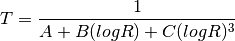

Thermo_Profile¶
Calculates and stores basic thermodynamic parameters
Authors Brian Greene, Jessica Blunt, Tyler Bell, Gus Azevedo
Copyright University of Oklahoma Center for Autonomous Sensing and Sampling 2019
Component of Profiles v1.0.0
-
class
Thermo_Profile.Thermo_Profile(temp_dict, resolution, filepath=None, gridded_times=None, ascent=True, units=None)¶ Contains data from one file.
Variables: - temp (np.array<Quantity>) – QC’d and averaged temperature
- mixing_ratio (np.array<Quantity>) – calculated mixing ratio
- rh (np.array<Quantity>) – QC’d and averaged relative humidity
- pres (np.array<Quantity>) – QC’d pressure
- alt (np.array<Quantity>) – altitude
- gridded_times (np.array<Datetime>) – times at which processed data exists
- resolution (Quantity) – vertical resolution in units of time, altitude, or pressure to which the data is calculated
-
__init__(temp_dict, resolution, filepath=None, gridded_times=None, ascent=True, units=None)¶ Creates Thermo_Profile object from raw data at the specified resolution.
Parameters: - temp_dict (dict) – A dictionary of the format {“temp1”:, “temp2”:, …, “tempj”:, “resi1”:, “resi2”:, …, “resij”, “time_temp”:, “rh1”:, “rh2”:, …, “rhk”:, “time_rh”:, “temp_rh1”:, “temp_rh2”:, …, “temp_rhk”:, “pres”:, “temp_pres”:, “ground_temp_pres”:, “alt_pres”:, “time_pres”:, “serial_numbers”:}, which is returned by Raw_Profile.thermo_data
- resoltion (Quantity) – vertical resolution in units of altitude or pressure to which the data should be calculated
- filepath (str) – the path to the original data file WITHOUT the suffix .nc or .json
- gridded_times (np.Array<Datetime>) – times at which data points should be calculated
- ascent (bool) – True if data should be processed for the ascending leg of the flight, False if descending
- units (metpy.Units) – the unit registry created by Profile
-
_read_netCDF(file_path)¶ Reads data from a NetCDF file. Called by the constructor.
Parameters: file_path (string) – file name
-
_save_netCDF(file_path)¶ Save a NetCDF file to facilitate future processing if a .JSON was read.
Parameters: file_path (string) – file name
Temperature Calibration¶
Resistance (R) to temperature (T)

Coefficients are pulled from ./coefs/MasterCoefList.csv on your computer.
Equation from: Greene, B.R. Boundary Layer Profiling Using Rotary-Wing Unmanned Aircraft Systems: Filling the Atmospheric Data Gap. Master’s Thesis, The University of Oklahoma, Norman, OK, USA, 2018.